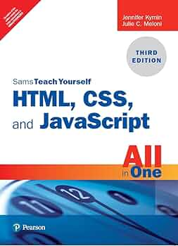
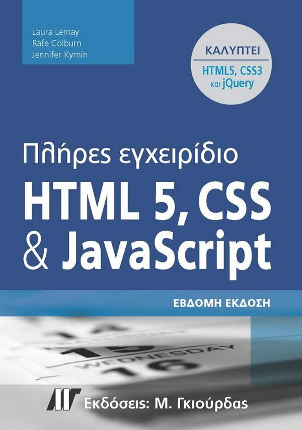

Προγραμματισμός για το web
Συγγραφείς: R. Connolly, R. Hoar
Περιγραφή: Το βιβλίο αυτό επικεντρώνεται στις βασικές αρχές και τεχνικές προγραμματισμού για το διαδίκτυο, καλύπτοντας σύγχρονες τεχνολογίες και εργαλεία για την ανάπτυξη εφαρμογών web.
Σελίδες: 850
Συνολική διάρκεια διάλεξης: 00:57:04
Αξιολόγηση: 4.8/5 (250 αξιολογήσεις)
Ηλεκτρονικό βιβλίο |
Παρακολούθηση διάλεξης
Μάθετε HTML 5, CSS και JavaScript όλα σε ένα

Συγγραφείς: J. Kyrnin, J. C. Meloni
Περιγραφή: Ένα ολοκληρωμένο βιβλίο εκμάθησης HTML5, CSS και JavaScript, σχεδιασμένο για όσους επιθυμούν να μάθουν να αναπτύσσουν εφαρμογές και ιστοσελίδες από το μηδέν. Καλύπτει τις πιο πρόσφατες εκδόσεις και πρακτικές.
Σελίδες: 950
Συνολική διάρκεια διάλεξης: 1:01:05
Αξιολόγηση: 4.7/5 (200 αξιολογήσεις)
Ηλεκτρονικό βιβλίο |
Παρακολούθηση διάλεξης |
Περιεχόμενο διάλεξης
Πλήρες Εγχειρίδιο HTML 5, CSS και JavaScript

Συγγραφείς: C. Rafe, J. Kyrnin, L. Lemay
Περιγραφή: Το βιβλίο παρέχει έναν πλήρη οδηγό για τη δημιουργία ιστοσελίδων και εφαρμογών με χρήση HTML5, CSS και JavaScript. Ιδανικό για αρχάριους και προχωρημένους χρήστες που θέλουν να βελτιώσουν τις δεξιότητές τους στην ανάπτυξη ιστοσελίδων.
Σελίδες: 1050
Συνολική διάρκεια διάλεξης: 00:28:01
Αξιολόγηση: 4.6/5 (180 αξιολογήσεις)
Ηλεκτρονικό βιβλίο |
Παρακολούθηση διάλεξης